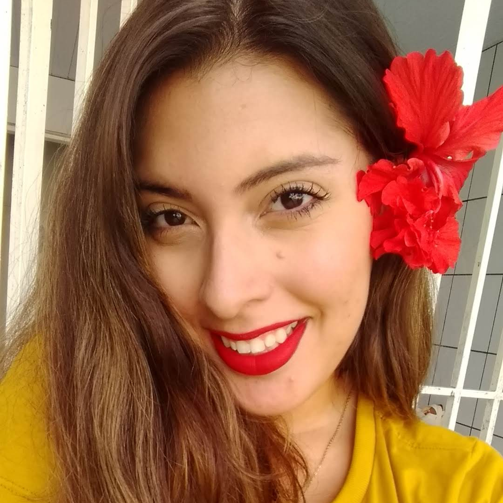

<!DOCTYPE html>
<html lang="pt-br" dir="ltr">
<head>
    <meta charset="UTF-8"/>
    <meta http-equiv="X-UA-Compatible" content="IE=edge">
    <meta name="viewport" content="width=device-width, initial-scale=1">
    <title>Sobre<title>
    <meta name="description" content="{{ site.description }}"/>
    <meta name="keywords" content="{{ site.keywords }}"/>
    <meta name="author" content="{{ site.author }}"/>
    <link rel="shortcut icon" href="img/favicon.ico">
    <link rel="stylesheet" type="text/css" href="css/normalize.css"/>
    <link rel="stylesheet" type="text/css" href="css/modern-blog.css"/>
    <!-- [if IE]> -->
    <script type="text/javascript" src="js/vendors/html5.min.js"></script>
    <!-- <![endif] -->
    <script>
        if (navigator.userAgent.toLowerCase().indexOf('firefox') > -1) {
            var root = document.getElementsByTagName('html')[0];
            root.setAttribute('class', 'ff');
        }
    </script>
</head>
  <body>

    <header class="header">
    <div class="recent">
        <ul class="nav">
            <li class="nav-item">
                <b><a class="nav-link" href="index.html">Página Inicial</a></b>
            </li>
            <li class="nav-item">
                <b><a class="nav-link" href="posts.html">Posts</a></b>
            </li>
            <!-- <li class="nav-item">
                <b><a class="nav-link" href="categorias">Categorias</a></b>
            </li> -->
            <li class="nav-item">
                <b><a class="nav-link" href="palestras-tutoriais.html">Palestras e Tutoriais</a></b>
            </li>
        </ul>
    </div>
    </header>
    <div class="pattern pattern--hidden"></div>
    <div class="container">
      <div class="jumbotron media">
        
        <div class="media-body">
          <h2 class="lead-p">Hello, world!</h2>
          <p class="lead">Letícia Silva é graduanda em Ciência da Computação, estudante de iniciação científica no INPE (Instituto Nacional de Pesquisas Espaciais), host do podcast Coluna7 e desenvolvedora no Colaboradados. É colaboradora no IEAv, organizadora do Django Girls, PyLadies, Devs JavaGirl e Women Techmakers, e fundadora do R-Ladies de São José dos Campos.</p>
          <hr class="my-4">
          <p class="lead-p">Luta para incentivar mulheres a entrarem em TI, acreditarem em si mesmas e mostrar que programar transforma vidas.</p>
        </div>
      </div>
    </div>
  <script src="js/vendors/trianglify.min.js"></script>
  <script src="js/vendors/TweenMax.min.js"></script>
  <script src="js/vendors/ScrollToPlugin.min.js"></script>
  <script src="js/vendors/cash.min.js"></script>
  <script src="js/card-modern-blog.js"></script>
  <script src="js/modern-blog.js"></script>
</body>
</html>
